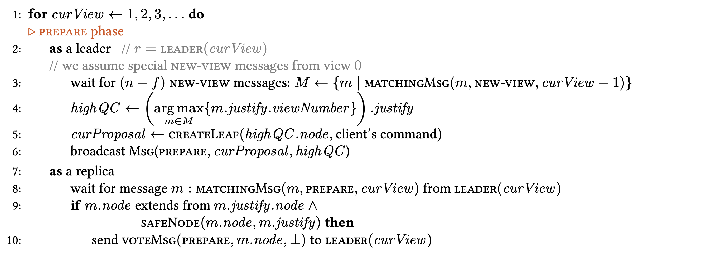
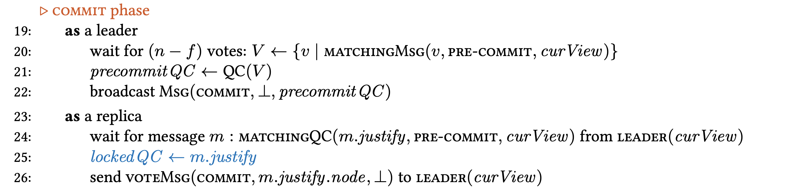
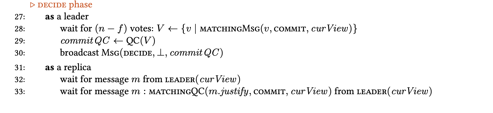

HotStuff is a consensus algorithm used in Libra blockchain. It is a partially synchronous model with extra two features for typical properties in distributed consensus: responsiveness and linear communication complexity. Responsiveness means after GST, the correct leader waits for (N-f) responses in order to guarantee that the leader can create a proposal that will make progress. The linear communication complexity O(n) means after GST, the leader communicates n messages to commit a block to the chain per round and each round has three phases. HotStuff merges the view change process with the normal process.
HotStuff BFT includes basic HotStuff protocol and chained HotStuff protocol. The basic protocol works in a succession of views numbered with a dedicated leader. A key ingredient in the protocol is a collection of (N − f) votes over a leader proposal, referred to as a quorum certificate (or "QC" in short). The leader simply picks the highest QC it knows of. HotStuff also makes use of threshold signatures and has a three-step QC commit rule. HotStuff has pipeline and rotates features and network delay is independent of the message upper bound delay. HotStuff is a star communication network, which means each communication will rely on the leader.
Each participant stores a tree of pending commands as its local data structure. Each time when a new view starts, each participant should send its highest prepareQC branch of its local tree to the leader participant. During the view period v, Pi serves as the leader participant if i = v mod n. When a client sends an operation request m to the leader Pi , the n participants carry out the four phases of the BFT protocol: prepare, pre-commit, commit and decide.
Prepare phase: The leader Pi selects the branch highQC that has the highest preceding view among all the new view messages it received from 2f+ 1 participants. Pi extends the tail of highQC node by creating a new leaf node proposal. Pi then broadcasts the digitally signed new leaf node proposal to all participants in a prepare message. A participant accepts this new leaf node proposal message if the signature is valid and if the branch of this new leaf node extends from the currently locked node lockedQC.node or the new node has a higher view number than the current locked QC. If a participant Pj accepts the new leaf node proposal message, it sends a prepare vote message to Pi by signing it.
Pre-commit phase: When Pi receives 2f+1 prepare votes for the current proposal, it combines them into a prepareQC. Pi broadcasts prepareQC in a pre-commit message. A participant responds to Pi with a pre-commit vote by signing it. Commit phase: When Pi receives 2f + 1 pre-commit votes, it combines them into a precommitQC and broadcasts it in a commit message; participants respond with a commit vote and set its lockedQC to precommitQC.
Decide phase: When Pi receives 2f + 1 commit votes, it combines them into a commitQC. Pi broadcasts commitQC in a decide message. Upon receiving a decide message, a participant considers the proposal embodied in the commitQC a committed decision, and executes the commands in the committed branch. The participant increments viewNumber and starts the next view.
Here I will introduce some rules for committing block. The HotStuff commit rule is as follows: A block (B) is considered a committed decision if there is a 3-chain headed by B, B ⇐ B′⇐ B′′⇐ B′′′, where the first three blocks form a direct ancestry B ← B′← B′′. The HotStuff preferred block rule is a replica has a preferred block determined by the highest 1-chain it received. Let B′⇐B′′ be the highest 1-chain a replica received. Then the preferred block (PB), for the replica is PB = (B′). A replica votes for a block (Bnew) only if it extends a branch from its preferred block.
HotStuff commit decisions are based purely on analyzing QC chains in a graph of blocks. The following chain-structures will be used repeatedly in the protocol:
1- 1-chain B⇐B′ implies that there are f+1 correct replicas that voted for B at B.height.
2- 2-chain B⇐B′⇐B′′ implies that there are f+1 correct replicas that voted for B′, and hence, received the 1-chain B⇐B′.
3- 3-chain B⇐B′⇐B′′⇐B′′′ implies that there are f+1 correct replicas that voted for B′′, and hence, they received the 2-chain B⇐B′⇐B′′.
In Chained HotStuff that improved the Basic HotStuff protocol. The idea is to change the view on every preparation phase, so each proposal has its own view. This reduces the number of message types. The leader does not actually carry a pre-commit phase, but instead initiates a new prepare phase and adds its own proposal. This preparation phase for view v + 1 simultaneously serves as the pre-commit phase for view v. The prepare phase for view v + 2 simultaneously serves as the pre-commit phase for view v + 1 and as the commit phase for view v. This is possible because all the phases have identical structure.
In HotStuff, the commit-phase of each level is pushed into the prepare-phase of the next level. It is safe for proposers not to include in a proposition a commit-certificate for the preceding level. But note that a decision may be reached only at levels in which a proposer does include a commit-certificate for the preceding level. The same happens in PBFT: A commit-phase may either complete, or a timeout is reached and a proposer transitions to the next level without a decision.

HotStuff decouples safety and liveness. Safety is specified via voting and commit rules while liveness is specified separately via a Pacemaker. The pacemaker guarantees liveness after GST and synchronizes all correct replicas and a unique leader into a common height for a sufficiently long period of time. Pacemaker needs to provide the proposer with a way to choose a proposal that does not conflict with the preferred branch of any correct proposer. This is done so that indeed, all correct proposers will vote for it.

HotStuff has many benefits such as being simple and forming a bridge between classical bft and modern blockchains. HotStuff concerns me with its responsiveness. The HotStuff paper defines responsiveness as "the correct leader finishing the consensus in time that doesn't depend on the timeout". The leader itself can be faulty and be offline. The timeout for the proposal still must be waited for if the leader is faulty before moving to the next view. HotStuff efficiently switches primaries for every consensus decision, providing the potential of decentralization. However, the design of HotStuff does not favor local communication, and the usage of threshold signatures strongly centralizes all communication for a single consensus decision to the primary of that round. HotStuff has very high latencies due to its 4-phase design. As evident from HotStuff clients face severe delay in receiving a response for their client requests.

Potential future work of HotStuff is that the view synchronization logic is encapsulated in a module named a Pacemaker, but does not provide a formal definition of what the Pacemaker does, nor an implementation. It would be nice future work to identify the role and the implementation of the pacemaker module.